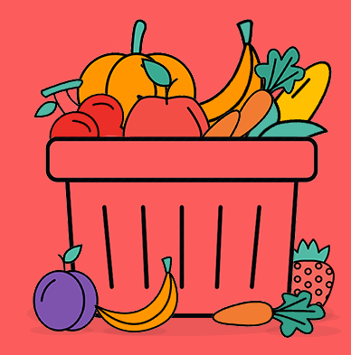
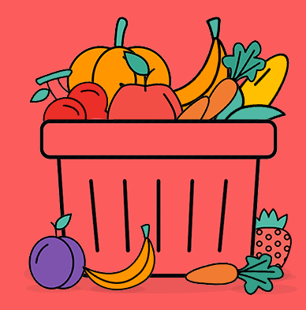

fm
Fresh Markect is a Mobile platform for delivery of fresh groceries, fruits& vegetables. Chooseproducts on our mobile app, and get everything delivered to yourdoorstep,quickly
Fresh Markect is a Mobile platform for delivery of fresh groceries, fruits& vegetables. Chooseproducts on our mobile app, and get everything delivered to yourdoorstep,quickly
